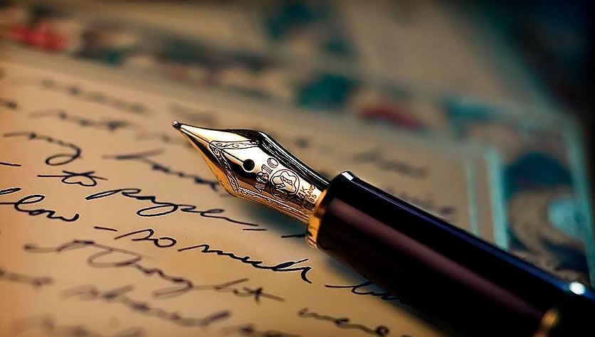
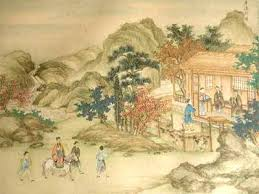
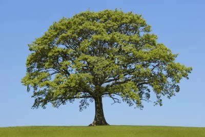

Mundo de la Poesía
¿Qué es un poema
Se denomina poema a la composición literaria escrita en verso, que pertenece al género de la poesía y cuya estructura métrica se encarga de la formación rítmica.
Otra manera de emplear este término es para referirse a una situación o cosa que se considera esperpéntica, fuera de lugar o particular en un sentido negativo.
Por ejemplo, “Después de perder el partido, su cara era un poema”.
La palabra poema procede del latín poēma, y este del griego ποίημα (poiēma, que significa creación, hazaña) y ποιήμα (poiesis), cuya raíz es poiein (hacer, crear).
No obstante, originariamente se utilizaba la palabra poema para denominar cualquier obra literaria.
Ir a Google
Ir a una imagen de un poeta mexicano
Caracteristicas
Las características de los poemas se pueden definir realizando un análisis literario de los mismos en los cuales se pueda definir rasgos importantes como el tipo de verso, la estrofa y la rima.
Los poemas que están escritos en versos, se distinguen en poemas de arte menor (de ocho o menos sílabas) y de arte mayor (de nueve o más sílabas).
En función de la rima, los versos de un poema pueden hacer uso de versos con rima (asonante o consonante), versos sueltos, versos en blanco y versos libres.
Sin embargo, no es necesario escribir poemas únicamente en verso, también se pueden escribir en prosa y es lo que se conoce como prosa poética.
Ejemplo:
En las noches claras
En las noches claras,
resuelvo el problema de la soledad del ser.
Invito a la luna y con mi sombra somos tres.

Tipos de poemas
- Poema lírico
- Poema épico
- Poema dramático
Los 7 mejores poetas de la historia
- Pablo Neruda
- César Vallejo
- Gustavo Adolfo Bécquer
- Federico García Lorca
- Rubén Darío
- Mario Benedetti
- Antonio Machado
La prosa y el verso
| Numero de silabas |
Dos |
Tres |
Cuatro |
Cinco |
Seis |
Siete |
Ocho |
| Nombre del verso |
Bisílabo |
Trisílabo |
Tetrasílabo |
Pentasílabo |
Hexasílabo |
Heptasílabo |
Octosílabo |
Sabias que...
Los poemas más antiguos datan del siglo XXIII a. C. (2300 a. C.), cuya autora fue la princesa del Imperio Acadio (gran reino de Mesopotamia):
Enheduanna (2285–2250 a. C.), la Suma Sacerdotisa del dios de la Luna, Nannar. Los temas centrales de la poesía han sido la educación femenina
en la antigua Mesopotamia, además de los epítetos descriptivos de diosas mesopotámicas que revelan la percepción cultural de las mujeres y su
papel en la sociedad antigua.

Durante la distaría Qing, el sexto emperador Qianlong (1711-1799) aprobó una ley en la que los autores que escribían los poemas tristes se
condenaban a la pena de muerte.

El análisis de unos 3.700 poemas de poetas rusos demostró que el árbol más poético es el abedul que se menciona en 84 poemas. El segundo
lugar ocupa el pino (51 poemas) y en el tercer lugar el se sitúa el roble (48 poemas).

Si quieres saber mas sobre el mundo de la poesía regístrate en nuestro sitio web